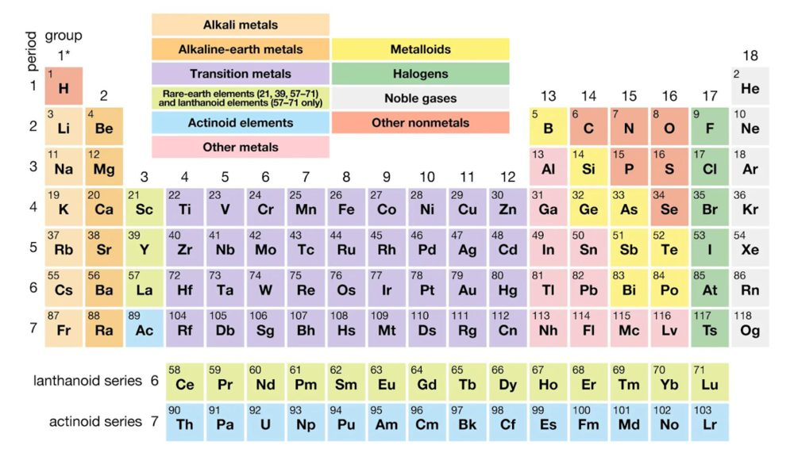
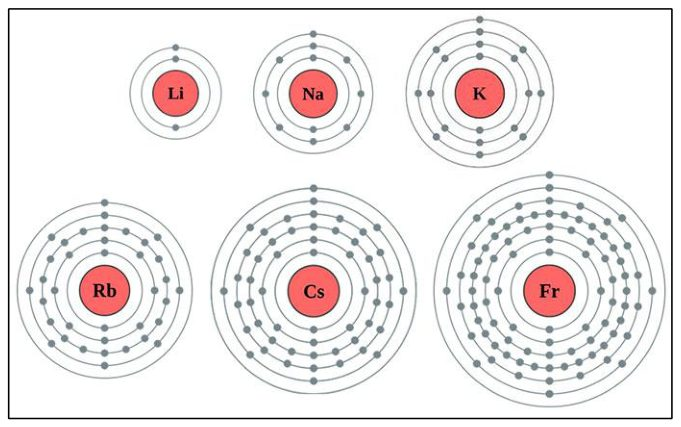
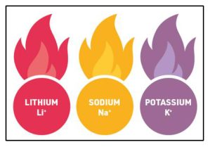
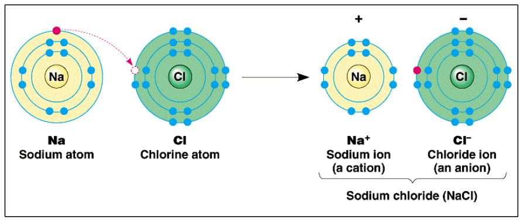
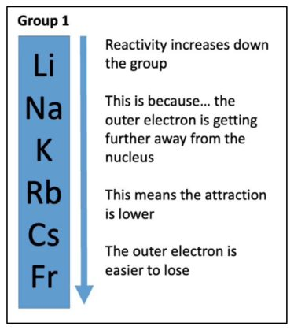
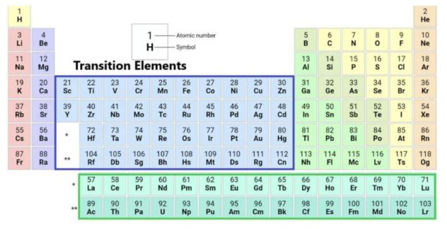
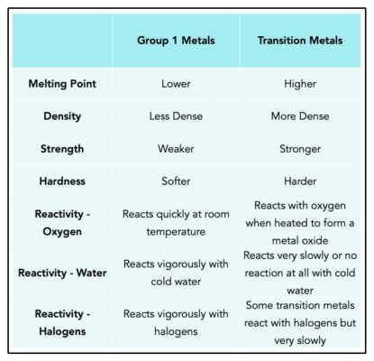
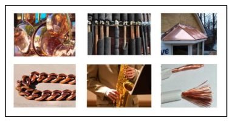

3.1 Alkali Metals
The alkali metals are the six elements in Group 1: lithium, sodium, potassium, rubidium, caesium and francium. Only lithium, sodium and potassium are safe enough for school labs (with care). Rubidium and caesium are far more reactive: added to water, they can react so violently that the glass container shatters. Francium is so rare and unstable that it is practically impossible to work with.

What do the electron configurations of the alkali metals have in common?
Physical properties
- Good conductors of heat and electricity, like all metals.
- Soft: sodium and potassium can be cut with a knife.
- Low density: lithium, sodium and potassium float on water.
- Low melting points compared with most metals.
Chemical properties
The alkali metals are the most reactive group of metals, because they have a single electron in their outer shell, which they lose easily to reach a stable configuration.
Reaction with water: alkali metals react violently with water, producing hydrogen gas and a metal hydroxide. The hydroxide makes the solution alkaline, changing the colour of indicators.
Reaction with chlorine: heated alkali metals ignite in chlorine gas, forming white chlorides. Sodium chloride (table salt) dissolves in water to give a clear solution.
Reaction with oxygen: heated alkali metals burst into flame in oxygen, forming white oxides. The flames have characteristic colours: lithium – red, sodium – yellow, potassium – lilac.

Ionic compounds
When alkali metals react with non-metals they form ionic compounds, e.g. sodium chloride NaCl (Na+ and Cl−) and sodium oxide Na2O (Na+ and O2−). The alkali metal ion always has a 1+ charge. These compounds are usually white solids that dissolve to give colourless solutions.

3.2 Patterns within Group 1 Metals
Trends in physical properties
| Metal | Symbol | Silvery and… | Density (g/mL) | Melts at (°C) | Boils at (°C) |
|---|---|---|---|---|---|
| Lithium | Li | soft | 0.53 | 181 | 1342 |
| Sodium | Na | a little softer | 0.97 | 98 | 883 |
| Potassium | K | softer still | 0.86 | 63 | 760 |
| Rubidium | Rb | even softer | 1.53 | 39 | 686 |
| Caesium | Cs | softest (of 5) | 1.88 | 29 | 669 |
Each property shows an overall increase or decrease going down the table. This pattern is called a trend: down Group 1, softness increases, density increases (overall: potassium is an exception), and melting and boiling points decrease.
Trends in reactivity
Going down Group 1, the metals become more reactive, as seen in their reactions with water:
| Metal | Observation with water |
|---|---|
| Lithium | Reacts gently, fizzing as hydrogen is released; floats on the surface |
| Sodium | More vigorous; skims across the surface releasing hydrogen |
| Potassium | Even more violent; melts into a ball and ignites the hydrogen, which bursts into (lilac) flame |
| Rubidium | Reacts explosively, with sparks and a large energy release |
| Caesium | The most reactive of the group: a violent explosion |
Explaining the reactivity trend

- Atomic size: atoms get larger down the group as extra electron shells are added.
- Electron loss: these metals react by losing their single outer electron to form a 1+ ion.
- Weaker nuclear attraction: in larger atoms the outer electron is further from the nucleus and shielded by inner shells, so it is attracted less strongly.
- Ease of electron loss: the weaker attraction makes the electron easier to lose, so reactivity increases.
Going down Group 1: atomic size ; melting point ; reactivity ; attraction between nucleus and outer electron .
Test your understanding
Which of the following is NOT a property of alkali metals?
Why are alkali metals very reactive?
- Why are rubidium and caesium not safe to use in school science labs?
- Why are alkali metals stored under oil or in special containers?
- They are extremely reactive and react explosively with water (enough to shatter glass), so they are too dangerous.
- To stop them reacting with oxygen and water vapour in the air.
- What happens when sodium reacts with water? Write a word equation.
- Why do alkali metals form compounds with non-metals, and what is the charge on the alkali metal ion?
- Sodium floats, fizzes and skims across the surface, releasing hydrogen gas; the solution becomes alkaline. sodium + water → sodium hydroxide + hydrogen.
- They easily lose their one outer electron to non-metal atoms (which gain electrons), forming ionic compounds. The alkali metal ion has a 1+ charge.
- What flame colour does potassium produce, and why is this useful?
- What trend is observed in density down the group?
- Explain why the boiling points decrease down Group 1.
- With reference to atomic structure, why does lithium react less violently with water than caesium?
- Lilac. Flame colours let us identify which metal (ion) is present in a sample (a flame test).
- Density generally increases down the group (potassium is an exception, being less dense than sodium).
- Down the group the atoms get larger, so the delocalised electrons are further from the nuclei and the metallic bonding is weaker; less energy is needed to separate the particles.
- Lithium's outer electron is in a shell close to the nucleus with little shielding, so it is held strongly and lost less easily. Caesium's outer electron is much further away and more shielded, so it is lost very easily and caesium reacts far more violently.
3.3 Comparing Group 1 and 2 Metals
| Property | Group 1 (alkali metals) | Group 2 (alkaline earth metals) |
|---|---|---|
| Reactivity | More reactive (lose 1 electron easily) | Less reactive (must lose 2 electrons) |
| Hardness | Softer (can be cut with a knife) | Harder |
| Melting points | Lower | Higher |
| Reaction with water | Violent | More moderate |
| Electrons lost | 1 | 2 |
| Reactivity down the group | Increases | Increases |
Reactivity increases down Group 2 for the same reason as Group 1: atoms get larger, so the outer electrons are further from the nucleus, held less tightly and lost more easily.
- Compare the reactivity of Group 1 and Group 2 metals, explaining the link between atomic size and reactivity.
- Describe the differences in hardness and melting point between Group 1 and Group 2 metals. How do these relate to their electron configurations?
- Group 1 metals are more reactive because they need to lose only one electron; Group 2 must lose two, which takes more energy. In both groups reactivity increases down the group because larger atoms hold their outer electrons further from the nucleus, so they are lost more easily.
- Group 2 metals are harder with higher melting points. Each Group 2 atom contributes two delocalised electrons and forms a 2+ ion, so the metallic bonding is stronger than in Group 1 (one electron, 1+ ions).
3.4 The Transition Metals

The transition metals are a block of about 30 elements in the middle of the periodic table, including many common everyday metals.
Physical properties
- Hard, strong and tough: much harder than Group 1; can't be cut with a knife.
- High melting points: solid at room temperature, except mercury, a liquid (melting point −39 °C).
- Malleable (hammered into sheets) and ductile (drawn into wires).
- Good conductors of heat and electricity: silver is the best electrical conductor, then copper.
- High density: denser than water, so they sink (unlike sodium, which floats).

Chemical properties
- Less reactive than Group 1: copper doesn't react with water or burn in air. Most don't react easily with air or water, but iron rusts in oxygen and water, which costs a lot to prevent.
- Form coloured compounds (Group 1 and 2 compounds are usually white), used e.g. in stained glass.
- Act as catalysts, speeding up reactions without being used up: iron in the Haber process (ammonia); nickel in hydrogenating vegetable oils into solid fats.
| Property | Application | Examples |
|---|---|---|
| Hardness and strength | Construction | Iron (as steel): abundant, affordable, widely used |
| Conductivity | Energy transfer | Steel hot-water radiators; copper electrical wiring |
| Catalysts | Speeding up industrial processes | Iron in the Haber process; nickel for hydrogenating oils |

Copper's versatility comes from its excellent conductivity, malleability, strength and resistance to corrosion.
- List three physical properties of transition metals and how they differ from Group 1.
- Why are transition metals better conductors than Group 1 metals?
- Give an example of a transition metal that forms a coloured compound and describe its use.
- How do transition metals act as catalysts? Give one example.
- Transition metals are harder and stronger (Group 1 can be cut with a knife), have higher melting points, and are denser (Group 1 metals can float on water).
- They contribute more delocalised electrons per atom to the metallic lattice, so more charge carriers can move through the structure.
- E.g. copper(II) sulfate is blue, and copper or cobalt compounds colour stained glass (cobalt gives blue, chromium green).
- They provide a surface/alternative pathway that speeds up a reaction without being used up. E.g. iron in the Haber process to make ammonia; nickel to hydrogenate vegetable oils.